lorenz_partial_25d_additive_mse_uniform_p30_obsnoise001__lc_sweepProject: Lorenz_INDpartial_N25_D1_NormTrue_T3__JacobianODE
Launched: 2026-04-16T14:35:10Z
Completed: 2026-04-16T19:55:17Z
Outcome: complete_clean
Git: latent-JacobianODE @ aefbe37
Expected runs: 9
lorenz_partial_25d_additive_mse_uniform_p30Description
Identical to lorenz_partial_25d_additive_mse_uniform but with prediction_steps=30 (seq_length=45) for a stronger multi-step training signal.
Hypothesis
The p30 + most_recent partial_25d sweep still underestimated the strong-contraction Lyapunov exponent. Adding uniform recon on top of p30 should close the gap further: uniform forces z_dyn to reconstruct the full delay window, tightening it onto a proper diffeomorphic chart of the attractor; p30 strengthens the forward rollout constraint. Expecting λ_min closer to empirical ~-14 than either fix alone achieved.
Success criteria
Swept axes (1): training.lightning.loop_closure_weight
Chosen run (by best_traj_loss): 39prin7v — traj_loss=0.00127, MASE=0.7177, R²=0.9966, LC loss=0.688, epoch=110.0
Swept-axis values at chosen run: training.lightning.loop_closure_weight=1.0e-05
Runs analyzed: 9 (expected 9)
| run_idx | run_id | training.lightning.loop_closure_weight |
best_traj_loss | best_MASE | R² | LC loss | epoch |
|---|---|---|---|---|---|---|---|
| 2 | 39prin7v |
1.0e-05 | 0.00127 | 0.7177 | 0.9966 | 0.688 | 110.0 |
| 1 | 278k3fs6 |
1.0e-06 | 0.00128 | 0.7177 | 0.9966 | 1.076 | 110.0 |
| 3 | 1aa60yos |
1.0e-04 | 0.00132 | 0.7287 | 0.9965 | 0.181 | 110.0 |
| 0 | kux0nmyq |
0 | 0.00140 | 0.7505 | 0.9962 | 1.007 | 102.0 |
| 4 | uargsgi2 |
0.001 | 0.00166 | 0.7889 | 0.9956 | 0.023 | 110.0 |
| 5 | 0urkgv2y |
0.01 | 0.00232 | 0.8940 | 0.9938 | 0.003 | 114.0 |
| 6 | zswyiot9 |
0.1 | 0.00413 | 1.1609 | 0.9890 | 0.000 | 115.0 |
| 7 | 2oy98bma |
1 | 0.00487 | 1.3376 | 0.9870 | 0.000 | 109.0 |
| 8 | rh70oa5r |
10 | 0.00653 | 1.6585 | 0.9825 | 0.000 | 98.0 |
| Criterion | Verdict | Note |
|---|---|---|
| λ_min noticeably more negative than the p30+most_recent baseline | Unknown | |
| val/trajectory_r2 at best LC within a few % of the most_recent p30 baseline | Unknown | |
| No loop-closure explosion under uniform training | Unknown |
Automated verdicts use simple numeric-threshold parsing and may mis-classify qualitative criteria. The Discussion section below takes precedence.
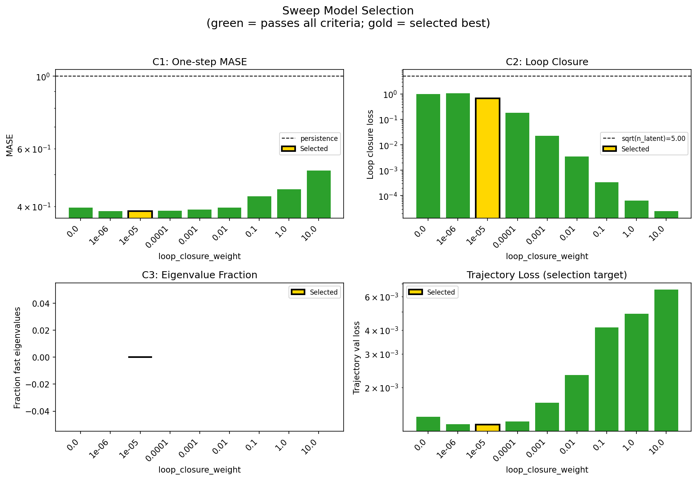
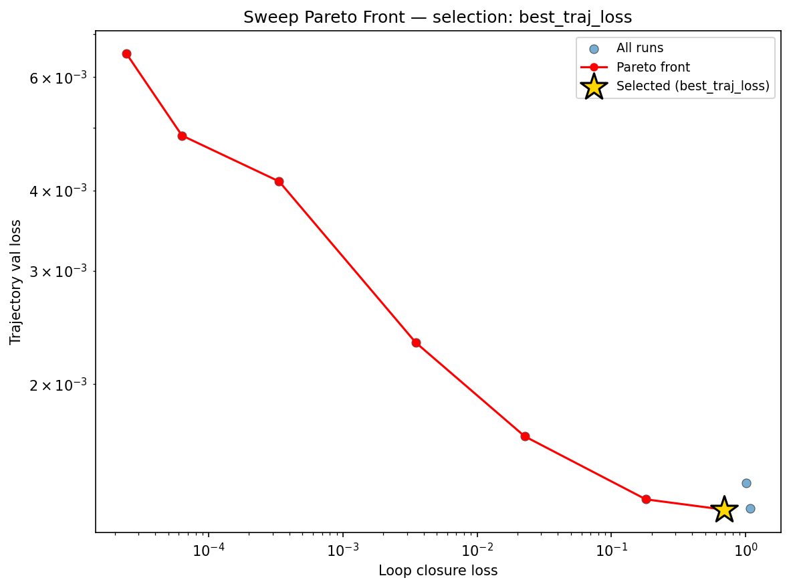
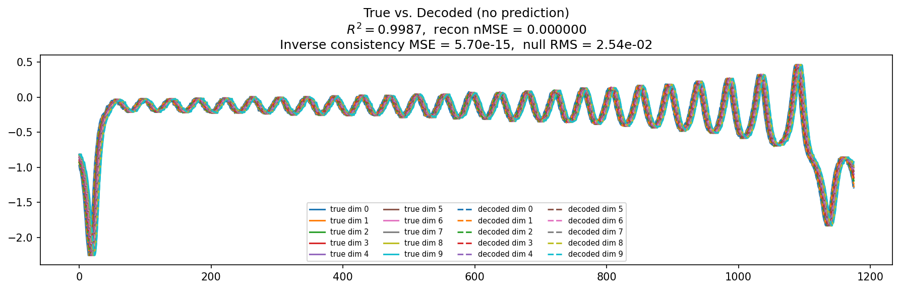
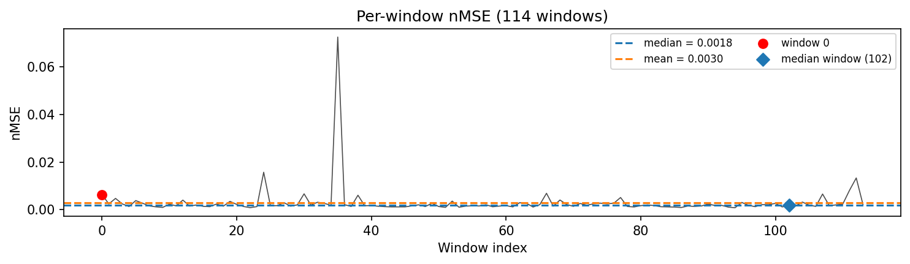
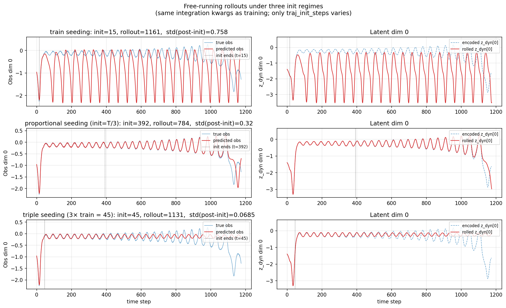
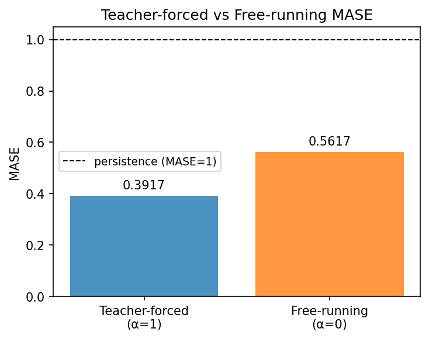
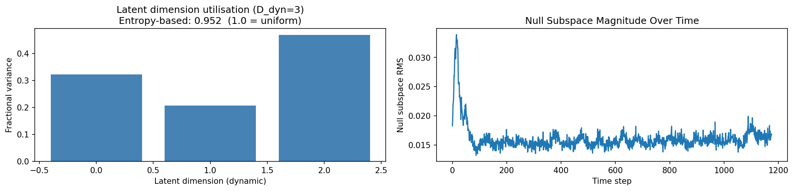
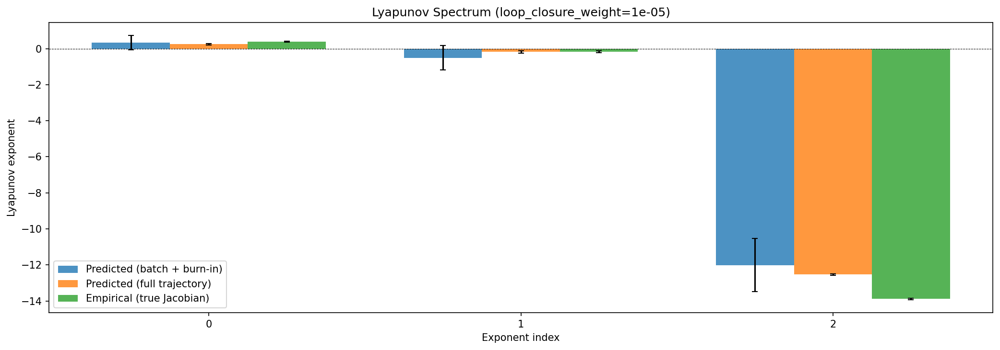
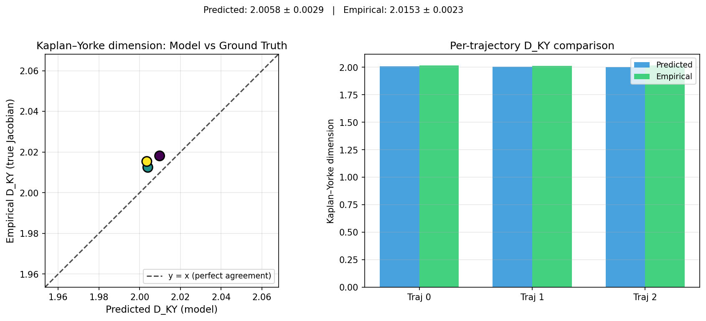
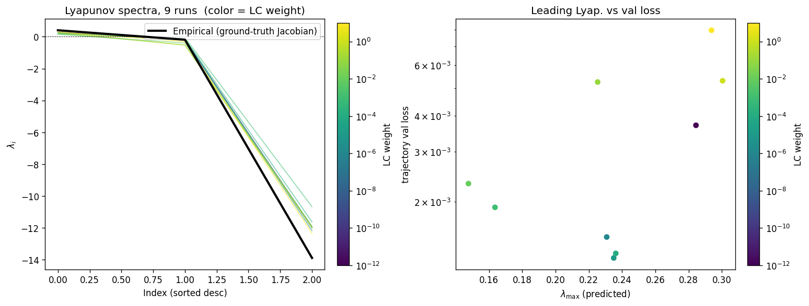
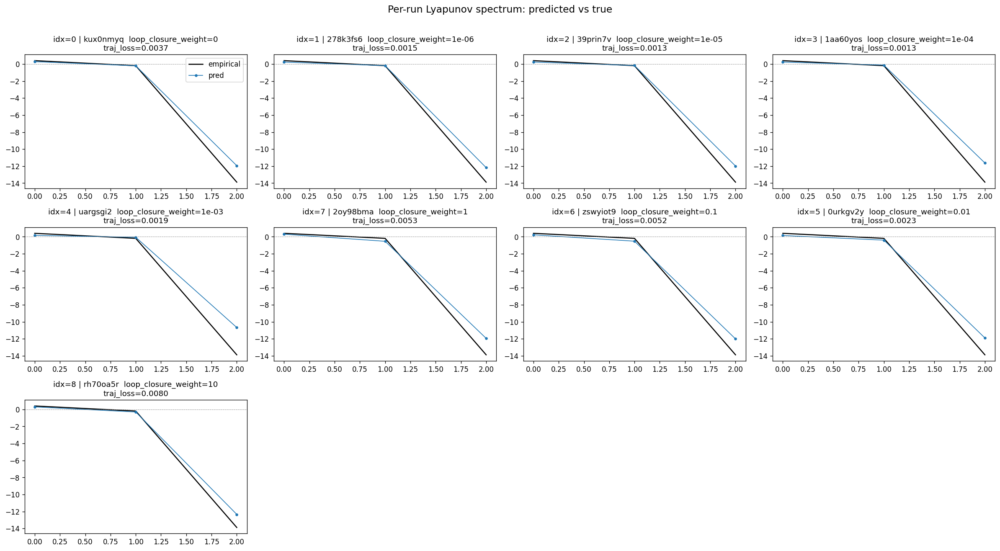
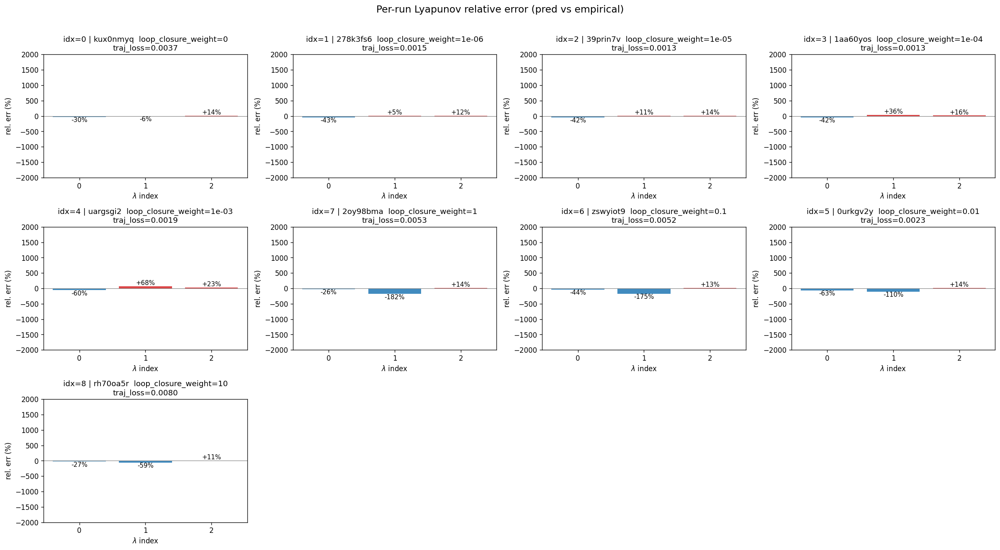
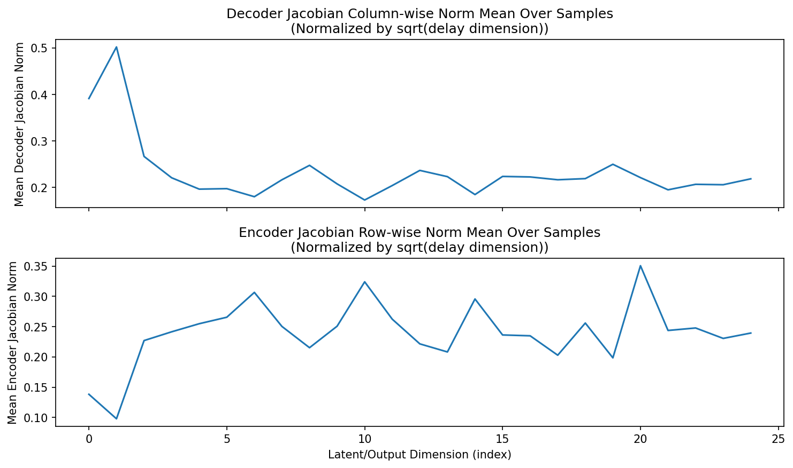
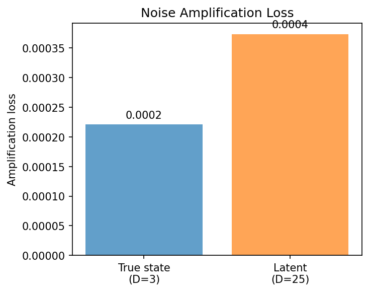
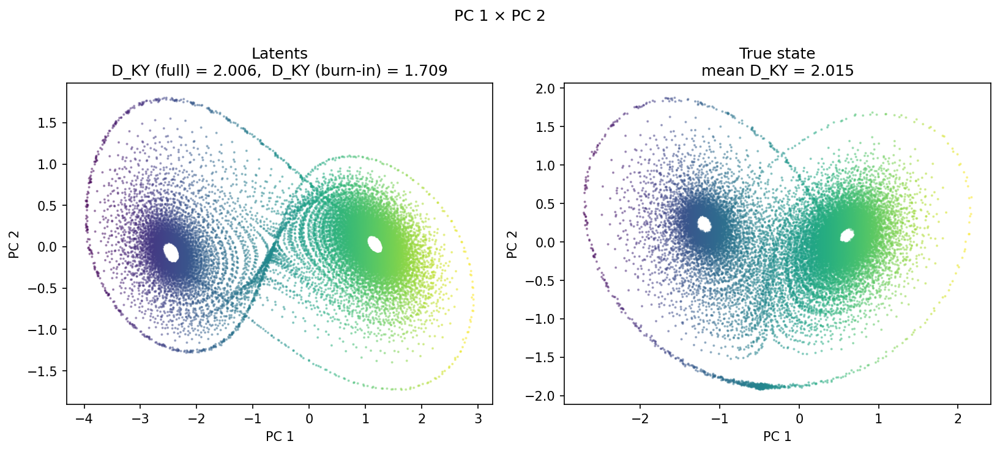
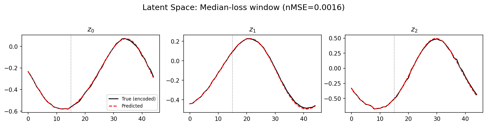
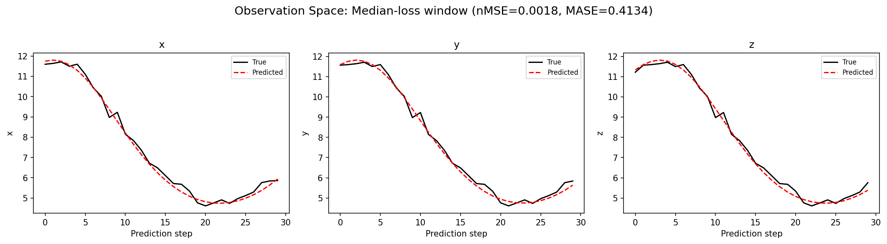
(to be written)
run_analytics stdoutrun_analyticsNo run_id provided — selecting best run from group 'lorenz_partial_25d_additive_mse_uniform_p30_obsnoise001__lc_sweep' ...
Found 9 total runs in JacobianODE/Lorenz_INDpartial_N25_D1_NormTrue_T3__JacobianODE (group=lorenz_partial_25d_additive_mse_uniform_p30_obsnoise001__lc_sweep)
All runs (state, loop_closure_weight, tangent_entropy_weight, kl_dyn_weight):
kux0nmyq: state=finished, lc=0.0, te=0.0, kl_dyn=0.0
278k3fs6: state=finished, lc=1e-06, te=0.0, kl_dyn=0.0
39prin7v: state=finished, lc=1e-05, te=0.0, kl_dyn=0.0
1aa60yos: state=finished, lc=0.0001, te=0.0, kl_dyn=0.0
uargsgi2: state=finished, lc=0.001, te=0.0, kl_dyn=0.0
2oy98bma: state=finished, lc=1.0, te=0.0, kl_dyn=0.0
zswyiot9: state=finished, lc=0.1, te=0.0, kl_dyn=0.0
0urkgv2y: state=finished, lc=0.01, te=0.0, kl_dyn=0.0
rh70oa5r: state=finished, lc=10.0, te=0.0, kl_dyn=0.0
slurm_timeout_min not found in any run config — falling back to 180 min
Including kux0nmyq (lc=0.0): use_all_runs=True (state=finished)
Including 278k3fs6 (lc=1e-06): use_all_runs=True (state=finished)
Including 39prin7v (lc=1e-05): use_all_runs=True (state=finished)
Including 1aa60yos (lc=0.0001): use_all_runs=True (state=finished)
Including uargsgi2 (lc=0.001): use_all_runs=True (state=finished)
Including 2oy98bma (lc=1.0): use_all_runs=True (state=finished)
Including zswyiot9 (lc=0.1): use_all_runs=True (state=finished)
Including 0urkgv2y (lc=0.01): use_all_runs=True (state=finished)
Including rh70oa5r (lc=10.0): use_all_runs=True (state=finished)
Found 9 effectively-done sweep runs:
loop_closure_weight=0.0, tangent_entropy_weight=0.0, kl_dyn_weight=0.0 -> run_id=kux0nmyq
loop_closure_weight=1e-06, tangent_entropy_weight=0.0, kl_dyn_weight=0.0 -> run_id=278k3fs6
loop_closure_weight=1e-05, tangent_entropy_weight=0.0, kl_dyn_weight=0.0 -> run_id=39prin7v
loop_closure_weight=0.0001, tangent_entropy_weight=0.0, kl_dyn_weight=0.0 -> run_id=1aa60yos
loop_closure_weight=0.001, tangent_entropy_weight=0.0, kl_dyn_weight=0.0 -> run_id=uargsgi2
loop_closure_weight=0.01, tangent_entropy_weight=0.0, kl_dyn_weight=0.0 -> run_id=0urkgv2y
loop_closure_weight=0.1, tangent_entropy_weight=0.0, kl_dyn_weight=0.0 -> run_id=zswyiot9
loop_closure_weight=1.0, tangent_entropy_weight=0.0, kl_dyn_weight=0.0 -> run_id=2oy98bma
loop_closure_weight=10.0, tangent_entropy_weight=0.0, kl_dyn_weight=0.0 -> run_id=rh70oa5r
n_dims=25, n_latent=25, n_dyn=3, dt=0.0150
run=kux0nmyq: DiagnosticMetrics(one_step_mase=0.3967251479625702, loop_closure_loss=1.007042646408081, fast_eigenvalue_fraction=0.0, trajectory_val_loss=0.0014023068360984325) (from cache, n_batches=100)
run=278k3fs6: DiagnosticMetrics(one_step_mase=0.38616660237312317, loop_closure_loss=1.0760879516601562, fast_eigenvalue_fraction=0.0, trajectory_val_loss=0.001280559110455215) (from cache, n_batches=100)
run=39prin7v: DiagnosticMetrics(one_step_mase=0.3864278197288513, loop_closure_loss=0.6875606775283813, fast_eigenvalue_fraction=0.0, trajectory_val_loss=0.0012745351996272802) (from cache, n_batches=100)
run=1aa60yos: DiagnosticMetrics(one_step_mase=0.38711661100387573, loop_closure_loss=0.18072062730789185, fast_eigenvalue_fraction=0.0, trajectory_val_loss=0.0013222586130723357) (from cache, n_batches=100)
run=uargsgi2: DiagnosticMetrics(one_step_mase=0.39031723141670227, loop_closure_loss=0.022606942802667618, fast_eigenvalue_fraction=0.0, trajectory_val_loss=0.0016571917803958058) (from cache, n_batches=100)
run=0urkgv2y: DiagnosticMetrics(one_step_mase=0.3962181806564331, loop_closure_loss=0.0034890449605882168, fast_eigenvalue_fraction=0.0, trajectory_val_loss=0.002318850252777338) (from cache, n_batches=100)
run=zswyiot9: DiagnosticMetrics(one_step_mase=0.42967891693115234, loop_closure_loss=0.0003351893974468112, fast_eigenvalue_fraction=0.0, trajectory_val_loss=0.004130178596824408) (from cache, n_batches=100)
run=2oy98bma: DiagnosticMetrics(one_step_mase=0.4507633447647095, loop_closure_loss=6.332118209684268e-05, fast_eigenvalue_fraction=0.0, trajectory_val_loss=0.004868514370173216) (from cache, n_batches=100)
run=rh70oa5r: DiagnosticMetrics(one_step_mase=0.5145372152328491, loop_closure_loss=2.4442675567115657e-05, fast_eigenvalue_fraction=0.0, trajectory_val_loss=0.006527189631015062) (from cache, n_batches=100)
Ranking method: best_traj_loss
Best run ID: 39prin7v
Best loop_closure_weight: 1e-05
Best tangent_entropy_weight: 0.0
Best kl_dyn_weight: 0.0
Best traj loss: 0.001275
Criteria applied: ['C1', 'C2', 'C3']
Surviving: 9 / 9
Auto-selected run_id: 39prin7v
======================================================================
PARETO FRONTIER RUNS (7 runs)
======================================================================
Run ID LC Loss Traj Val Loss
------------ -------------- --------------
rh70oa5r 0.000024 0.006527
2oy98bma 0.000063 0.004869
zswyiot9 0.000335 0.004130
0urkgv2y 0.003489 0.002319
uargsgi2 0.022607 0.001657
1aa60yos 0.180721 0.001322
39prin7v 0.687561 0.001275 <-- selected
======================================================================
RANKING METHOD COMPARISON (over 9 survivors)
======================================================================
Method Run ID LC Loss Traj Val Loss
---------------------- ------------ -------------- --------------
best_traj_loss 39prin7v 0.687561 0.001275 <-- active
pareto_knee 2oy98bma 0.000063 0.004869
geo_rank 39prin7v 0.687561 0.001275
minimax_rank uargsgi2 0.022607 0.001657
geo_log_score 39prin7v 0.687561 0.001275
minimax_log_score 0urkgv2y 0.003489 0.002319
======================================================================
Loading run 39prin7v from JacobianODE/Lorenz_INDpartial_N25_D1_NormTrue_T3__JacobianODE ...
Train dataset shape: torch.Size([24882, 45, 25])
Validation dataset shape: torch.Size([7917, 45, 25])
Test dataset shape: torch.Size([3393, 45, 25])
Train trajectories dataset shape: torch.Size([22, 1176, 25])
Validation trajectories dataset shape: torch.Size([7, 1176, 25])
Test trajectories dataset shape: torch.Size([3, 1176, 25])
Loading checkpoint epoch=110-step=22200.ckpt...
Computing reconstruction ...
Computing MASE ...
Teacher-forced MASE: 0.3917
Free-running MASE: 0.5617
Computing latent utilization ...
Entropy-based utilization: 0.952
Null subspace mean RMS: 1.622876e-02
Computing Lyapunov exponents ...
Computing full-trajectory Lyapunov (3 test trajs, T=1176) ...
Predicted Lyapunov exponents (batch+burn-in, 128 windowed trajs):
λ_1 = +0.3412 ± 0.3928
λ_2 = -0.5006 ± 0.6775
λ_3 = -12.0120 ± 1.4703
Predicted Lyapunov exponents (full-length, 3 test trajs):
λ_1 = +0.2488 ± 0.0366
λ_2 = -0.1763 ± 0.0745
λ_3 = -12.5331 ± 0.0397
Empirical Lyapunov exponents (mean ± std):
λ_1 = +0.3846 ± 0.0251
λ_2 = -0.1716 ± 0.0444
λ_3 = -13.8799 ± 0.0398
Mean KY dim (predicted): 2.006 ± 0.003
Mean KY dim (empirical): 2.015 ± 0.002
Mean KY dim (burn-in): 1.709 ± 0.399
Computing prediction windows ...
Windows: 114 — nMSE min=0.0008, median=0.0018, mean=0.0030, max=0.0726
Computing long-trajectory free-running rollouts ...
Computing encoder/decoder Jacobians ...
encoder_jacobian: (128, 25, 25)
decoder_jacobian: (128, 25, 25)
Computing amplification loss ...
Amplification loss — True state: 0.000221
Amplification loss — Latent: 0.000374